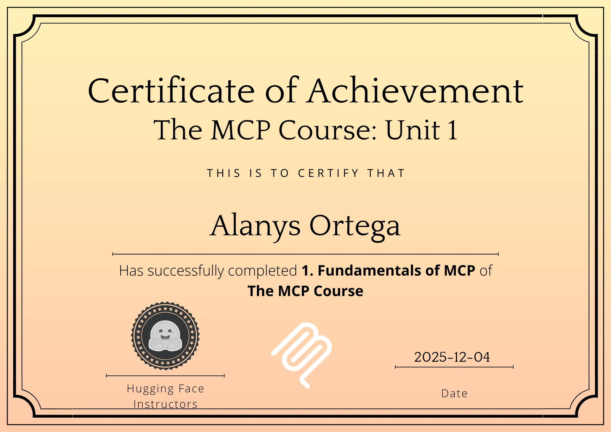

🌸
Soy estudiante de Ingeniería Biomédica, mi pasión se centra en la electrónica y la intersección de la tecnología y la salud. Actualmente, estoy explorando el mundo del Machine Learning y el desarrollo web para crear soluciones innovadoras en el ámbito de la ciencia de datos.
Proyecto completo de regresión basado en Random Forest (R² del 85.74%). El objetivo fue predecir el gasto médico individual y justificar el modelo con métricas de negocio (RMSE).
🚀 Ver Aplicación Web (Demo) Ver Código en GitHubAnálisis de datos para identificar patrones y correlaciones en hábitos de sueño, estrés y calidad de vida.
🚀 Ver Aplicación Web (Demo) Ver Código en GitHubProyecto de Clustering (K-Means) para segmentar países en grupos de riesgo basados en tasas de suicidio y probabilidad de muerte por enfermedades crónicas, creando un clasificador para toma de decisiones médicas.
🚀 Ver Aplicación Web (Clasificador) Ver Código y Modelos en GitHubClasificador de imágenes de celebridades desarrollado con Deep Learning. El código fuente y el modelo están alojados en GitHub, y una demostración interactiva está disponible en Hugging Face Spaces.
🤖 Ver Demo en Hugging Face Ver Código en GitHubProyecto de Deep Learning que implementa YOLOv8m para la detección y clasificación de vehículos (Coches, Buses, Minibuses, Camiones) en imágenes aéreas de drones. El proyecto incluye la organización del dataset y documentación de métricas de rendimiento (mAP50: 65.2%).
Ver Código y Resultados en GitHub ⬇️ Descargar Modelo Entrenado (.pt)Comprometida con la formación continua en el campo de la Inteligencia Artificial y el Deep Learning.

Puedes seguir mi progreso y contactarme a través de mi página de Github.